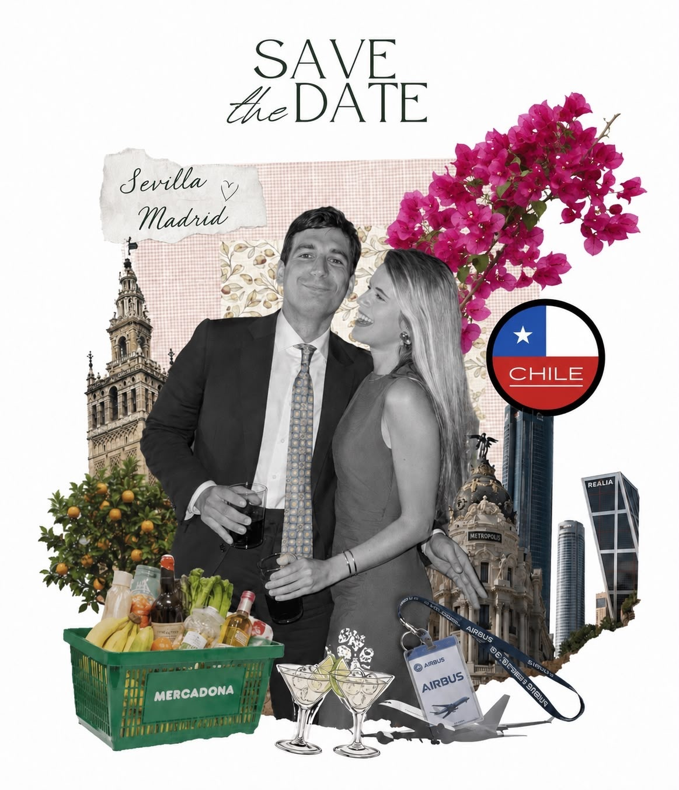

La ceremonia se celebrará en la Iglesia de San Alberto de Sicilia a las 12:30
Iglesia de San Alberto de Sicilia
C. Manuel Rojas Marcos
Casco Antiguo, 41004 Sevilla, España
La celebración tendrá lugar en la Hacienda de Xenis
Hacienda de Xenis
Chucena
Huelva, España
Por favor, rellena el siguiente formulario y confírmanos si podrás acompañarnos en nuestro día.
Aunque confirmaremos los horarios definitivos más adelante, indicamos horarios provisionales para que nos podáis indicar en el cuestionario si iréis en autobús o no.
🚌
Salida hacia la Hacienda de Xenis
13:30 h
desde los Jardines de Murillo
🚌
Hacia Sevilla
23:30 h
con paradas en Plaza de Armas y Plaza de Cuba
El mejor regalo es poder compartir con vosotros este día, si además queréis ayudarnos en el inicio de esta nueva etapa, estaremos muy agradecidos:
¡Copiado al portapapeles!